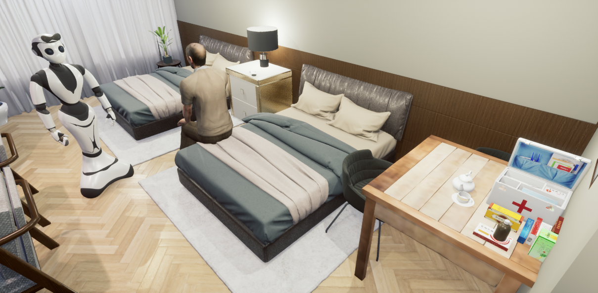
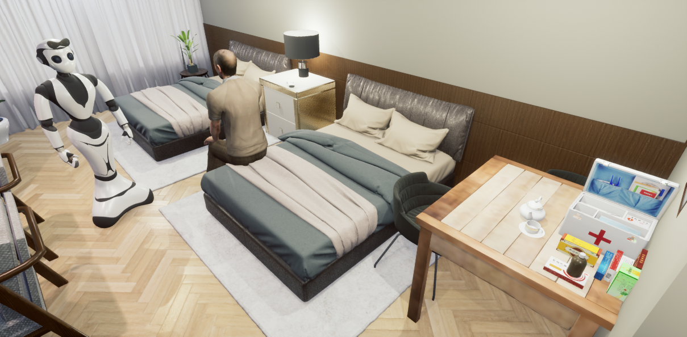
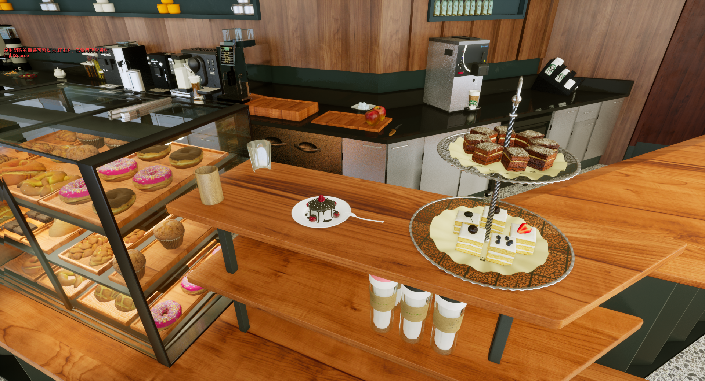
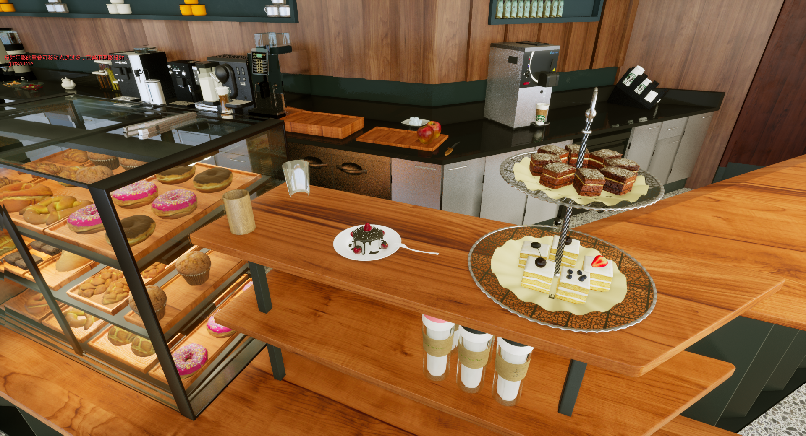

Recently, the advent of pre-trained large-scale language models (LLMs) like ChatGPT and GPT-4 have significantly advanced the machine's natural language understanding capabilities. This breakthrough has allowed us to seamlessly integrate these open-source LLMs into a unified robot simulator environment to help robots accurately understand and execute human natural language instructions.
To this end, in this work, we introduce a realistic robotic manipulation simulator and build a Robotic Manipulation with Progressive Reasoning Tasks (RM-PRT) benchmark on this basis. Specifically, the RM-PRT benchmark builds a new high-fidelity digital twin scene based on Unreal Engine 5, which includes 782 categories, 2023 objects, and 15K natural language instructions generated by ChatGPT for a detailed evaluation of robot manipulation. We propose a general pipeline for the RM-PRT benchmark that takes as input multimodal prompts containing natural language instructions and automatically outputs actions containing the movement and position transitions. We set four natural language understanding tasks with progressive reasoning levels and evaluate the robot's ability to understand natural language instructions in two modes of adsorption and grasping. In addition, we also conduct a comprehensive analysis and comparison of the differences and advantages of 10 different LLMs in instruction understanding and generation quality.
We hope the new simulator and benchmark will facilitate future research on language-guided robotic manipulation.

 


 

@article{rmprt2023,
title={RM-PRT: Realistic Robotic Manipulation Simulator and Benchmark with Progressive Reasoning Tasks},
author={Pengzhen Ren and Kaidong Zhang and Hetao Zheng and Zixuan Li and Yuhang Wen and Fengda Zhu and Mas Ma and Xiaodan Liang},
year={2023},
journal={arXiv:2306.11335}
}